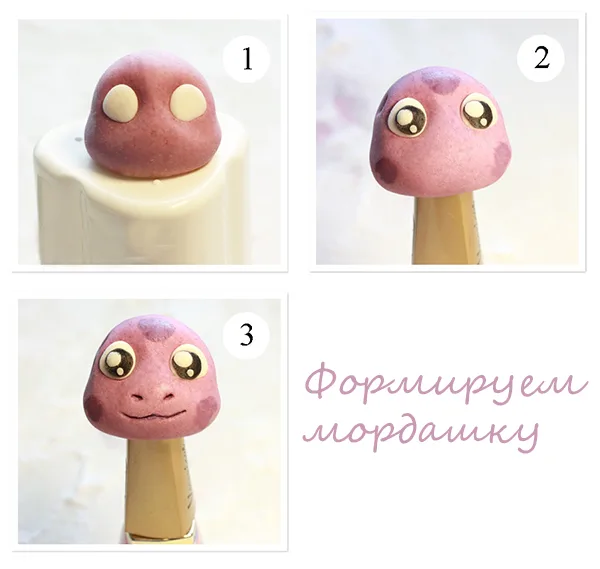
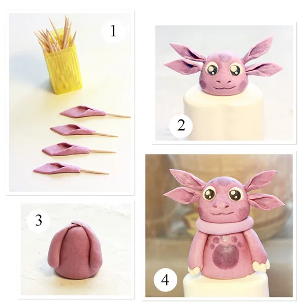
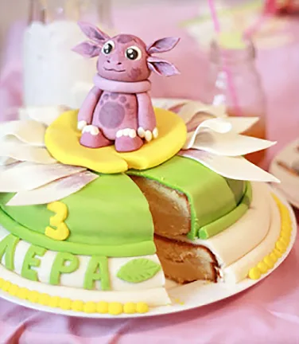

Приємно порадувати малюка на день народження буде простіше, якщо приготувати святковий дитячий торт з улюбленим персонажем з мультфільму. Одним з кращих варіантів для прикрашання солодкого виробу стане Лунтик з мастики. Самостійно зліпити фігурку буде простіше, якщо дотримуватися покрокових рекомендацій з цього майстер-класу.
Що знадобиться
Перед тим як зробити Лунтика, необхідно підготувати пилади і матеріали, а саме:
- мастику (покупну або домашню);
- харчові барвники;
- харчовий клей (його може замінити вода або яєчний білок);
- зубочистки;
- стеки для мастики;
- ватну паличку.
Підготовчий етап
Перед тим як зліпити Лунтика з мастики, потрібно підготувати інгредієнти. Необхідна мастика фіолетового, чорного і білого кольору. Якщо хочеться, щоб всі компоненти були максимально натуральними, то масу можна підготувати самостійно, а пізніше – пофарбувати в потрібний колір. Весь процес ліплення фігурки займе близько 2-х годин.
I етап – виготовлення мордочки
Ліпиться Лунтик з мастики покроково наступним чином:

- Потрібно взяти частину фіолетової мастики і скачати голову у вигляді кулі. Нижню частину злегка приплюснути. Сформувати щічки.
- Прикраса буде виглядати реалістичніше, якщо правильно зробити очі. Від мастики білого кольору потрібно відщипнути два невеликих шматочка і зробити два приплющених кола. За допомогою стека створити на мордочці неглибокі впадини під очниці. Нанести трохи клею або води і вклеїти в середину очі.
- У персонажа буде завершений вигляд, якщо з чорної мастики зробити зіниці очей, а в середину кожної вставити 2 маленьких шматочка білої мастики різного розміру – відблиски.
- За допомогою вушної палички і насиченого фіолетового барвника зробити цятки на мордочці – на лобі і в двох місцях на щічках.
- Luntik буде виглядати максимально естетично, якщо красиво оформити ротик і ніс. За допомогою зубочистки зробити ніздрі і ротик. Потрібно додатково акуратно прокреслити ці дві області зубочисткою з чорним харчовим барвником.
II етап – ліплення вушок
Простий МК Лунтика з мастики знадобиться кожній матусі в процесі підготовки до свята. Окрему увагу в рецепті приділено виготовленню вушок, які створюються поетапно за такою схемою:

- Від фіолетового мастики відщипнути чотири невеликих однакових шматочка. Скачати чотири тонких пелюстки ромбовидної форми.
- Підготувати зубочистки. Кожну акуратно розрізати навпіл.
- У центр мастичних пелюсток потрібно вкласти половину зубочистки так, щоб одна її частина стирчала вістрям назовні.
- Після цього загорнути нижню частину кожної пелюстки з зубочисткою, як на картинці, щоб вийшло акуратне вушко на паличці. Можна промазати вуха всередині темнішим пурпуровим барвником, тонуючи їх.
Важливо!
Перед тим як вставити зубочистку з вухом в мордочку, потрібно почекати, поки всі деталі підсохнуть. Подібна обережність запобіжить псуванню фігурки. Коли вушка висохнуть, їх потрібно вставити по двоє з кожної сторони мордочки.
III етап – тулуб і декор
Підходимо до завершальної частини майстер-класу Лунтик з мастики:

- З фіолетової маси скачати конус, приплюснутий внизу і вгорі.
- Відірвати ще два шматочки того ж кольору під ручки. Їх злегка розкачати в ковбаски, щоб лапки вийшли довгастої форми, злегка звужуючись до одного з кінців. Приклеїти, зафіксувавши їх у верхній частині конуса вузькими частинами вгору.
- Для лапок взяти товстіші ковбаски, теж звужені з одного боку. На вузьку частину «посадити» конус. Під його масою сформуються ступні. Злегка притиснути їх, надаючи форму.
- З невеликої частини фіолетової мастики скачати довгу ковбаску. Вона буде виконувати функцію коміра.
- Від білої мастики відщипнути 12 маленьких шматочків. Акуратно скачати з них овали. За допомогою стека зробити по три невеликих поглиблення на кожній лапці мастичного персонажа. Нанести невелику кількість клею або води на матеріал і приєднати до Лунтика кігтики.
- За допомогою ще однієї зубочистки прикріпити голову до тулуба фігурки.
Порада!
Приховати нерівності і надати красивий вид фігурці допоможе комірець. Для цього раніше підготовлена ковбаска фіксується під мордочкою.
- За допомогою вушної палички і насиченого пурпурного барвника (як на мордочці) слід поставити цятки на животику Лунтика. Фігурка готова!
Залишилося підготувати смачний крем і основний торт, куди поставити персонажа і, можливо, його друзів. Перед тим як встановити прикрасу, важливо переконатися, що всі елементи фігурки встигли висохнути.
Ще один спосіб ліплення Лунтика можна подивитися на відео: